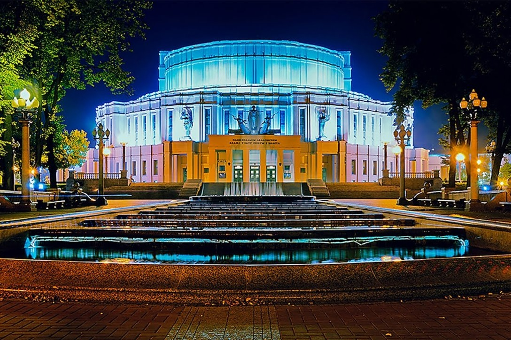

Костёл Святого Симеона и Святой Елены
Костёл святого Симеона и святой Елены или Красный костёл – это самый известный католический действующий храм Белоруссии. Является одной из ключевых достопримечательностей Минска и охраняется на государственном уровне. Входит во все обзорные экскурсии по городу. Известен не только своей архитектурой, но и печальной историей возникновения.
Национальная библиотека Беларуси
В годы Великой Отечественной войны Белорусская государственная библиотека имени Ленина потеряла около 83 % фондов и специальное оборудование. Полностью вывезены фонды редких и старопечатных книг, абонемента и читальных залов, вместе с литературой сожжено здание резервного фонда.Здание Совета Республики Национального собранияВ послевоенные десятилетия библиотека возрождалась и развивалась, расширяя собрания, налаживая международные связи.
Большой театр оперы и балета Беларуси

©Бразовский Михаил Алексеевич